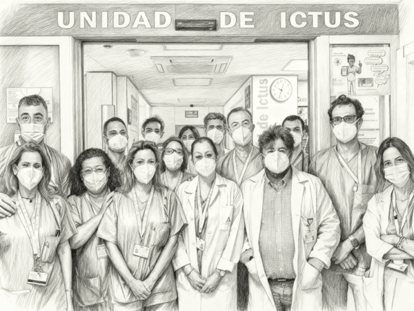

Situada al fondo de la sala de hospitalización, en la cuarta planta del pabellón B del Hospital Regional Universitario de Málaga, dentro del Servicio de Neurología. Cuenta con 7 camas y un puesto con sillón, vigilados desde la Mesa de Control de Enfermería mediante visión directa y monitorización continua por vídeo. Está dotada con tecnología avanzada para la monitorización de constantes vitales, sistemas de telemetría y registro EEG por paciente. Además, dispone de ecógrafo-doppler para el estudio vascular de troncos supraaórticos y del polígono de Willis.
La asistencia está a cargo de neurólogos dedicados a la patología neurovascular, junto con un equipo de enfermería especializado —dos enfermeras y una auxiliar por turno— que garantizan una atención integral. Contamos también con la colaboración del Servicio de Medicina Física y Rehabilitación, cuyos médicos y fisioterapeutas realizan la valoración y recuperación funcional precoz. Además, participan activamente el Servicio de Endocrinología y Nutrición, la Unidad de Disfagia (de carácter multidisciplinar) y otras especialidades implicadas en el manejo de nuestros pacientes.
La Unidad de Ictus del Hospital Regional Universitario de Málaga fue la primera en constituirse en Andalucía, en 2005, como dispositivo específico para el tratamiento del ictus agudo. En 2018 se renovó con mayor capacidad asistencial y tecnología avanzada, consolidándose como un referente en la atención integral al ictus en la comunidad.
